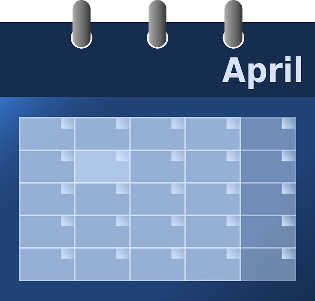

En este gran reto crearemos una herramienta muy útil: una agenda.
La agenda está relacionada con el ser humano desde que se comenzó a medir el tiempo. De hecho, se crearon específicamente para eso. En un mundo lleno de demandas laborales, personales y familiares, tener la posibilidad de almacenar los eventos en un entorno virtual, según la hora y la fecha, es de gran utilidad. Es por este motivo que te invitamos a crear una propia y a que, una vez adquieras la habilidad, la incluyas en tus proyectos de desarrollo.
Objetivo
Desarrolla una agenda que permita crear, editar y eliminar eventos con su información asociada, almacenándolos en una base de datos.
Requerimientos Generales
- Para realizar correctamente este proyecto debes desarrollar dos versiones de la agenda: Una en PHP y una base de datos en MySQL; la segunda versión en Node.js y una base de datos en MongoDB; de esta manera podrás aplicar tus conocimientos en ambas tecnologías y motores de bases de datos.
- Para la versión en PHP de la agenda debes descargar el archivo NextUcodBaseAgenda_versionPHP.zip en donde encontrarás todo el desarrollo Front-End de la agenda. De la misma manera, para la versión en Node.js debes descargar el archivo NextUcodBaseAgenda_versionNode.zip que contiene el Front-End de la agenda para esta versión.
Los requerimientos específicos de este proyecto son:
REQUERIMIENTOS VERSIÓN PHP-MYSQL:
1
Crea una base de datos mediante la herramienta phpMyAdmin en la que se pueda almacenar usuarios con sus contraseñas y eventos de la agenda asociados a cada usuario. Cada evento comprende un id, título, fecha de inicio, hora de inicio, fecha de finalización, hora de finalización (los últimos 3 pueden ser nulos), y un campo booleano que indique si el evento es de día completo o no. Para cada usuario la base de datos debe almacenar el correo electrónico que funcionará como el nombre de usuario único ante el sistema, el nombre completo, su contraseña, y su fecha de nacimiento.
2
Crea 3 usuarios en la base de datos desde el servidor ejecutando un script de PHP, las contraseñas deben almacenarse encriptadas.
3
Valida el ingreso al sistema al iniciar sesión, comparando los datos ingresados en el formulario con los almacenados en la base de datos.
4
Al iniciar una sesión exitosamente, el sistema debe cargar todos los eventos asociados al usuario en la sesión desde la base de datos y mostrarlos en el calendario. La librería usada para el calendario es FullCalendar. Puedes encontrar su documentación, si lo consideras necesario, en el siguiente enlace: fullcalendar.io
5
Al diligenciar el formulario de la derecha, se debe crear un nuevo evento en el calendario y debe ser almacenado en la base de datos.
6
Al arrastrar un evento al ícono de la basura en la parte derecha de la página, éste debe ser eliminado del calendario y su registro debe eliminarse de la base de datos.
7
Al arrastrar un evento a otro día del calendario, éste debe ser actualizado en la base de datos a las nuevas fechas de inicio y final según su nueva posición.
REQUERIMIENTOS VERSIÓN NODE.JS-MONGODB:
1
Crea un script en el servidor que al ejecutarse por consola, cree un nuevo usuario para el sistema en una base de datos en MongoDB.
2
Valida el ingreso al sistema al iniciar sesión, comparando los datos ingresados en el formulario con los almacenados en la base de datos.
3
Al iniciar una sesión exitosamente, el sistema debe cargar todos los eventos asociados al usuario en la sesión desde la base de datos y mostrarlos en el calendario.
4
Al diligenciar el formulario de la derecha, se debe crear un nuevo evento en el calendario y debe ser almacenado en la base de datos.
5
Al arrastrar un evento al ícono de la basura en la parte derecha de la página, éste debe ser eliminado del calendario y su registro debe eliminarse de la base de datos.
6
Al arrastrar un evento a otro día del calendario, éste debe ser actualizado en la base de datos a las nuevas fechas de inicio y final según su nueva posición.
Instrucciones para la entrega
Una vez finalices el proyecto, comprime la carpeta con los archivos y súbela al curso. Ten presentes los siguientes pasos para completar este último requerimiento, de la manera adecuada:
- En una carpeta guarda tu proyecto y todos los recursos que consideres necesarios para su funcionamiento. Demás, guarda un archivo github_url.txt que contenga la URL de tu proyecto versionado en el repositorio. Recuerda que haciendo uso de Git Hub podrás crear tu portafolio de aplicaciones web.
- Utiliza la siguiente estructura para nombrar la carpeta Zip que entregarás pues nos permitirá identificarte: NombreDelCurso_PrimerNombre_PrimerApellido.zip
- Para subir el Zip al curso:
- Accede a la página Evaluación final.
- Haz clic en Añadir envío.
- Agrega una descripción en la sección Texto en línea y adjunta la carpeta comprimida en la sección Envíos de archivo.
- Haz clic en Guardar cambios .